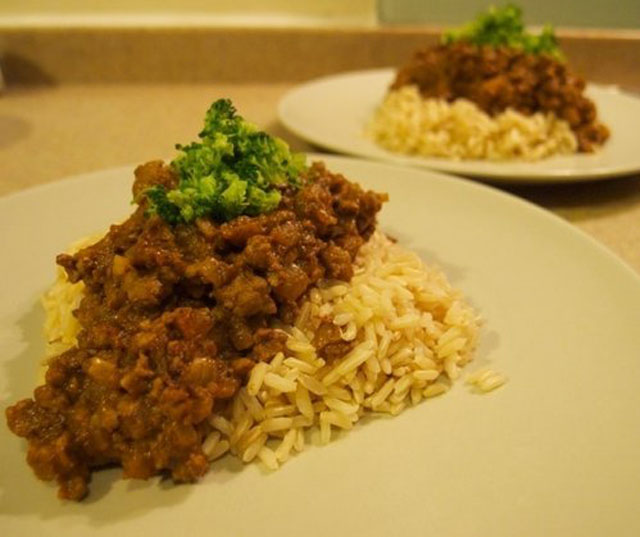
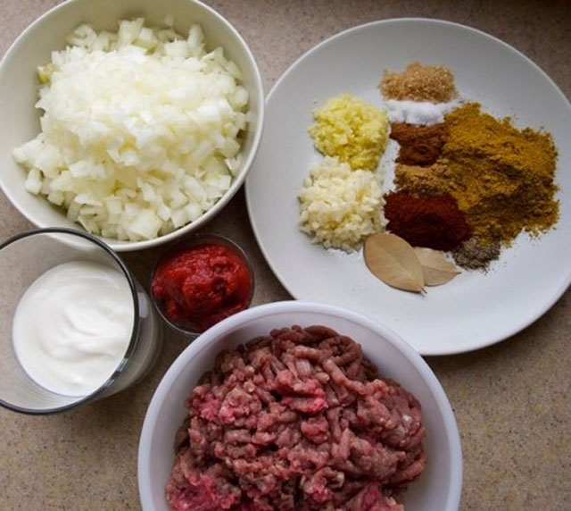
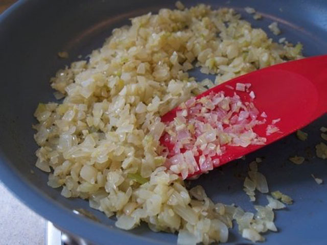
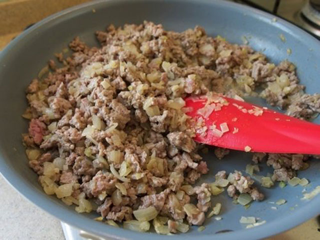
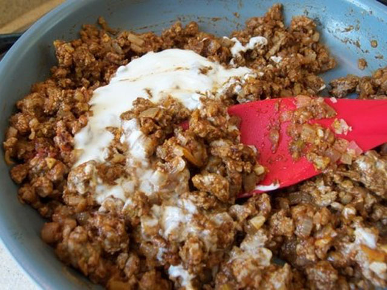
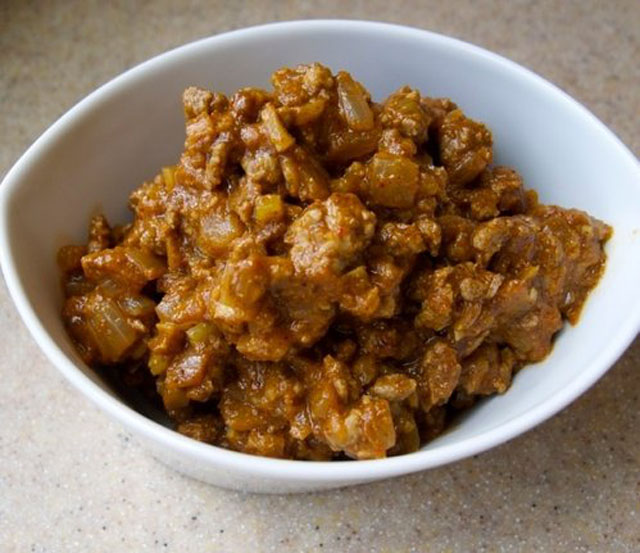

材料

- 油大さじ2
- にんにく 大さじ1（みじんぎり）
- 生姜 大さじ1（みじんぎり）
- たまねぎ 2個
- 牛ひき肉 400g
- 胡椒 小さじ1/2
- 塩 小さじ1
- ヨーグルト大さじ2
- トマトペースト大さじ1
- ガラムマサラ 大さじ2
- カイエンペッパー 小さじ1〜
- チリペッパー 小さじ1〜
- クミン 小さじ1
- クローブ 小さじ1/2
- ターメリック 小さじ01/2
- ベイリーフ 1〜2枚
- 水 1/4カップ
作り方
STEP1:香味野菜を炒める

油を入れて熱したフライパンに生姜とにんにくを入れ、弱火に落とす。
香りが立ったらたまねぎを入れて弱〜中火で炒める。
たまねぎの色が変わるまでじっくり炒めると甘みとコクが増す。お好みで調整する。
STEP2：肉を炒める

肉と塩胡椒を加え、炒める。
STEP3：トマトペーストとヨーグルトを加える

肉に火が通ったら、トマトペーストとヨーグルトを加え、沸騰したら火加減を弱める。
STEP4：スパイスを入れる
ベイリーフ以外のスパイスをすべて加えて炒める。
ガラムマサラとはインドのミックススパイスのこと。
主な原料はシナモン、クローブ、ナツメグ、カルダモン、クミンなどですが、
メーカーによって違うためカレー粉で代用しても構わない。
カイエンペッパーやチリペッパーの量は好みの辛さによって調整する。
STEP5：ペイリーフと水を入れて煮込む
ベイリーフと水を入れてかき混ぜてから、強火で水分を飛ばす。
一度水を入れることで味を均等に整える。
出来上がり

